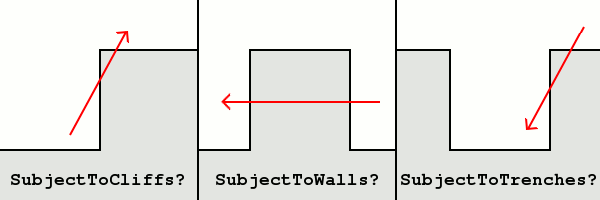

巷战时武器能对这个建筑内的人进行多少百分比的攻击而不仅仅是对建筑本身攻击，用来做战壕和掩体。
[BuildingType]>UC.PassThrough= (float - chance)
有多少几率攻击能够穿透这个掩体攻击到里面的步兵，默认0
[BuildingType]>UC.FatalRate= (float - chance)
如果武器能够攻击到驻兵，一击必杀的几率，默认0
[BuildingType]>UC.DamageMultiplier= (float - multiplier)
如果武器能够攻击到驻兵，伤害倍率
[Projectile]>SubjectToTrenches= (boolean)
该弹体是否无视UC.PassThrough，100%命中驻兵，yes的话UC.PassThrough依然有效，no的话直接贯通，默认是
